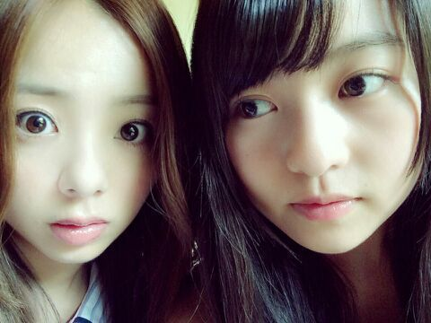
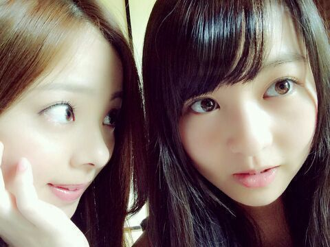

| 2014/05 30 Fri | ぃょぃょ、ぃょぃょ プリ ンシパルよ。 よろしゅう!!!!!! ろってぃ〜(゜▽゜*) |
皆さん こんにちわ ..*
かわむら まひろ、ろってぃーです


ろってぃ- & まりか

裸眼です(゜▽゜*)って感じの顔してる。笑
ねっ!! まりか？
お気に入りのツーショット。えいっ

ぁぁぁぁぁ 話かわりますけど、
ついに、ついに、ついにっ ))))))))))))))))))
『 プリンシパルーーーー
 』が始まりますね。いぇい
』が始まりますね。いぇい
よっちゃ。ろってぃ-。気合い入れていくぞ、いくぞ、いくぞ。
今回は何度も言ってる通り
コメディ☆!!!!! 笑い☆ !!!
皆さん、まひろ頑張るからちゃんと見ててくださいよ〜(*´ω｀*)
 ？？
？？
もう、恥じらいとか捨ててプリンシパルに挑みますからね〜(゜▽゜*)!!!
色んなメンバーが毎回毎回でる！それがプリンシパルの良きところ(・▽・)!!!
今日は 初めてちゃんと衣装を着て舞台でやったのですが、うん、２幕楽しいです !!!
頑張ります!!
皆さん、応援よろしくお願いいたします
 !!!鳥
!!!鳥
明日 なんの役に立候補しようかな？？
プリンシパル来れない方もたくさんいると思いますが、お家から学校から仕事場から応援していてください(><)
ちゃんと 私 頑張りますから
ではっ、２週間プリンシパルの世界へ行ってきます！！！
のし。
コメント(211)
2014/05/30 00:30